お薬生活とペット保険 [梅吉]
梅吉のお薬生活もそろそろ３週間になります。
審判が下った日のお話
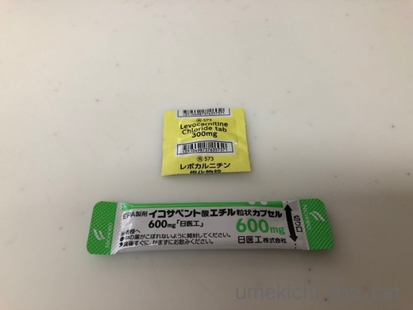
処方されたのはレボカルニチンとイコサペンタエン酸。
レボカルニチンはざっくり言うと体内の脂肪の燃焼を助ける成分。
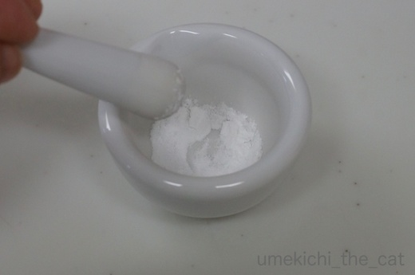
錠剤なので乳鉢ですりつぶして半量を１日一回フードに混ぜます。
味はちょっと酸味のある感じ。
乳鉢は以前急性胃腸炎で投薬が必要になった時に買ったもの。
その時は必需品になるとは思っていませんでした^^;
でも、この作業楽しいんですよー。ちょっとした薬剤師さん気分。
イコサペンタエン酸は人間のサプリメントでよく見るEPA、「血液サラサラ成分」です。
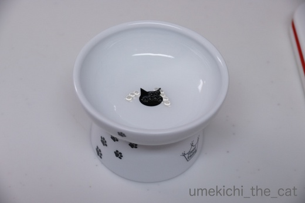
こんなビーズみたいな粒です。潰すとお魚の油の匂いがします。
これは一袋を１日一回。
初めは朝夕に分けてフードに混ぜていましたが
「ごはんー！ごはんーー！！」と
鳴きわめく梅吉を待たせて日に二度の作業は大変だったので夕方の一度に。
つぶつぶを気にしてたべないかな？と思いましたが気にする様子なし！助かるわ〜。
粉薬、つぶつぶ薬とカリカリが混ざり合い食べやすくなる様に少量のぬるま湯でまぜあわせて・・・
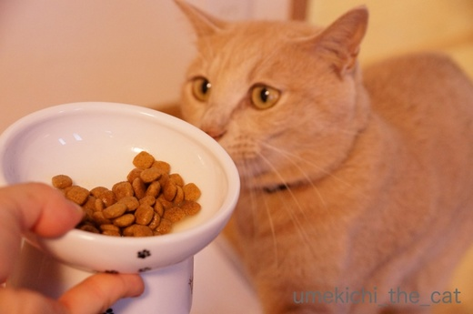
お待たせしました。はいどーぞ♡
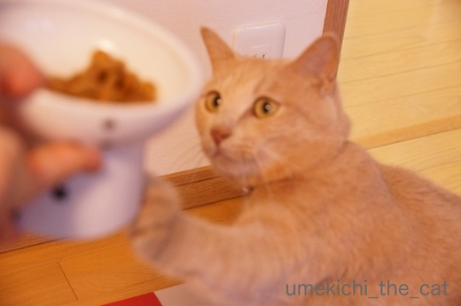
ごはんくださーい！！！のハイターーーーーーーッチ(*>艸<)
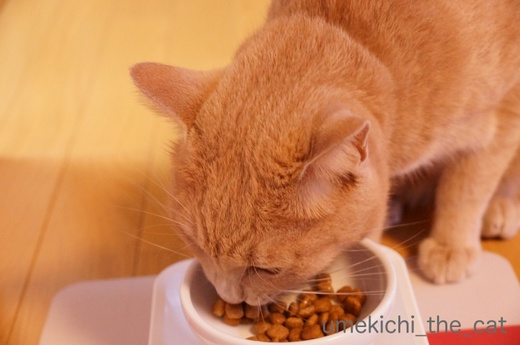
がつがつがつがつ・・・
梅吉が食べるだけの30秒の動画です。
落ちも何もないのですっ飛ばしてください・・・
ただ、音を消していないので食べてるカリカリ音が聞けますよ。
マニアのかた（笑）はどうぞ＾＾
こんな風にお薬の与え方も定まってきました。
生涯続く作業なので梅吉も私もストレスの少ない様に続けていかなくちゃ。
 ↑ガブッと一押し↑
↑ガブッと一押し↑
安心材料でいいや、と入ったペット保険が役立ちました。
保険会社に保険金を申請して返答がきましたよ。
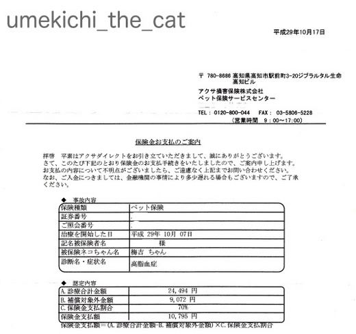
前回病院で支払ったのは24,494円。動物病院高いですよねー（涙）
ワクチンとレボリューションの代金を差し引くと15,422円。
この金額が高脂血症の治療代金となります。
梅吉が加入した保険は治療費の70パーセントをカバーしてくれるので
10,795円が戻ってきました！助かります＾＾
次回は三ヶ月後に採血＆お薬をもらいに病院へ行きますが
今回と同じくらいの治療費がかかると思われます。
梅吉の保険の掛け金は17,000円くらいだったので次回の通院で（変な言い方ですが）
支払った保険料の元が取れることになります。
保険入って良かった・・・
ただし！梅吉が加入した保険会社は持病があると更新を断ってくると言うハナシです。
保険の更新は来年３月。
保険会社からなんと言ってくるのか・・・。
更新を断られちゃったらそれはそれで仕方ないなと思ってますけどね(^_－)☆
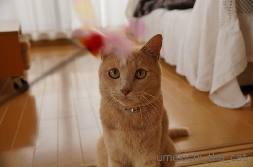
持病はあるけど元気一杯の梅吉です＾＾
審判が下った日のお話
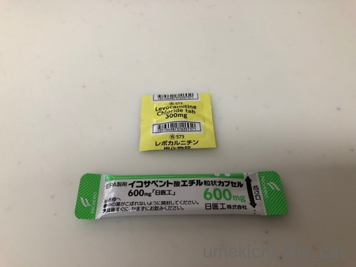
処方されたのはレボカルニチンとイコサペンタエン酸。
レボカルニチンはざっくり言うと体内の脂肪の燃焼を助ける成分。
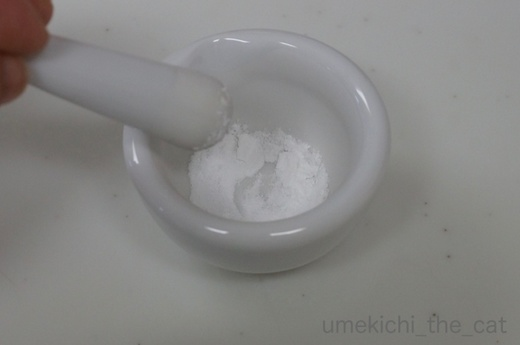
錠剤なので乳鉢ですりつぶして半量を１日一回フードに混ぜます。
味はちょっと酸味のある感じ。
乳鉢は以前急性胃腸炎で投薬が必要になった時に買ったもの。
その時は必需品になるとは思っていませんでした^^;
でも、この作業楽しいんですよー。ちょっとした薬剤師さん気分。
イコサペンタエン酸は人間のサプリメントでよく見るEPA、「血液サラサラ成分」です。
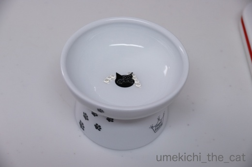
こんなビーズみたいな粒です。潰すとお魚の油の匂いがします。
これは一袋を１日一回。
初めは朝夕に分けてフードに混ぜていましたが
「ごはんー！ごはんーー！！」と
鳴きわめく梅吉を待たせて日に二度の作業は大変だったので夕方の一度に。
つぶつぶを気にしてたべないかな？と思いましたが気にする様子なし！助かるわ〜。
粉薬、つぶつぶ薬とカリカリが混ざり合い食べやすくなる様に少量のぬるま湯でまぜあわせて・・・
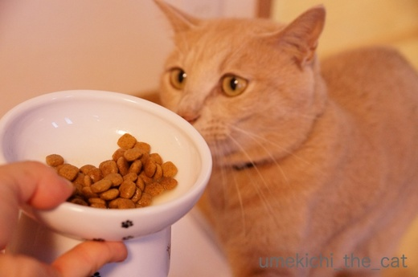
お待たせしました。はいどーぞ♡
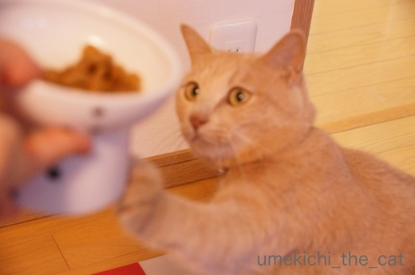
ごはんくださーい！！！のハイターーーーーーーッチ(*>艸<)
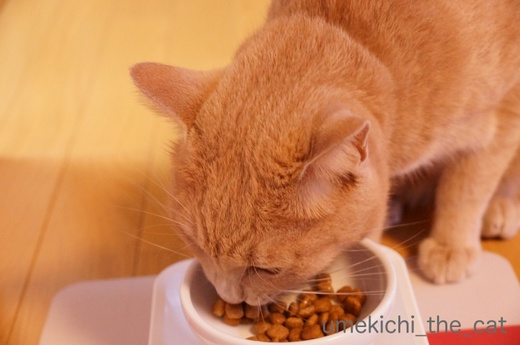
がつがつがつがつ・・・
梅吉が食べるだけの30秒の動画です。
落ちも何もないのですっ飛ばしてください・・・
ただ、音を消していないので食べてるカリカリ音が聞けますよ。
マニアのかた（笑）はどうぞ＾＾
こんな風にお薬の与え方も定まってきました。
生涯続く作業なので梅吉も私もストレスの少ない様に続けていかなくちゃ。
安心材料でいいや、と入ったペット保険が役立ちました。
保険会社に保険金を申請して返答がきましたよ。
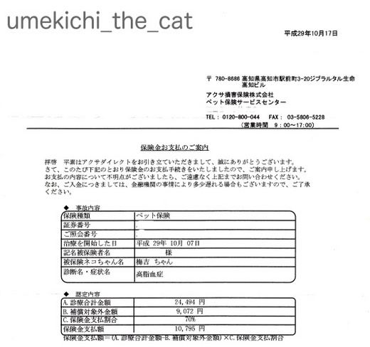
前回病院で支払ったのは24,494円。動物病院高いですよねー（涙）
ワクチンとレボリューションの代金を差し引くと15,422円。
この金額が高脂血症の治療代金となります。
梅吉が加入した保険は治療費の70パーセントをカバーしてくれるので
10,795円が戻ってきました！助かります＾＾
次回は三ヶ月後に採血＆お薬をもらいに病院へ行きますが
今回と同じくらいの治療費がかかると思われます。
梅吉の保険の掛け金は17,000円くらいだったので次回の通院で（変な言い方ですが）
支払った保険料の元が取れることになります。
保険入って良かった・・・
ただし！梅吉が加入した保険会社は持病があると更新を断ってくると言うハナシです。
保険の更新は来年３月。
保険会社からなんと言ってくるのか・・・。
更新を断られちゃったらそれはそれで仕方ないなと思ってますけどね(^_－)☆
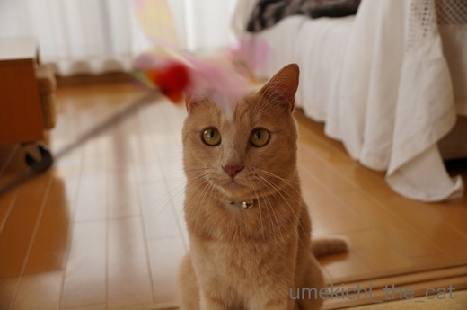
持病はあるけど元気一杯の梅吉です＾＾

カフェオレ色の梅吉

梅吉 2023年8月10日 永眠


梅吉と出会った譲渡会

犬猫の理由なき殺処分ゼロ
妄想広告
UMEKICHI 光

爆発的に早い！
時々攻撃的！
Thanks to Mr.Boss365
爆発的に早い！
時々攻撃的！
Thanks to Mr.Boss365

梅吉さん、薬を嫌がらずに飲んでくれるなんてお利口さんですねぇ(^O^)
「ごはんくださ～い」のハイタッチも可愛いなぁ(^-^)
ペット保険、うちも最初の１年は入ってましたが、一度も使わずだったので
それ以降は「にゃんず貯金」にしてます＾＾
by ニッキー (2017-10-26 12:54)
マニアなのでとーぜん動画も見ました。良い食べっぷりですね~。梅吉さん良い子じゃ~。
うちも今は保険に入ってません。お金がかかるのは子猫の一年くらいと、歳を取ってからですが、支払い制限額や高齢は対象外で元が取れませんでした。その意味でも梅吉さん本当に良い子じゃ~~。
by zombiekong (2017-10-26 14:00)
動画見ましたよ～！食べ方がきなこと同じです(^^♪ 梅吉くんの動画見て「ナノはやっぱり食べるの下手なんだ～(:_;)」って思いました。
保険継続できるといいですね。
by palpal (2017-10-26 14:20)
お薬も気にせずパクパク食べてくれると
助かりますよね(*^_^*)
とっても良い子の梅吉さんです♪
by きぃ (2017-10-26 17:20)
ハイタッチのおてて、かわゆい～♪
お薬を気にしないでくれて、なんていい子なんだ！
保険もきいて、親孝行ですのぅ＾＾
カリカリ音もかわいいです。
by sana (2017-10-26 19:01)
お薬生活、頑張ってるね☆
そうか！こんなふうに、ぬるま湯を少し混ぜるといいんですね♪
うちのあかりは、カリカリの中に入れておくと、薬だけ残すし、
猫缶に混ぜると、汁だけ舐めて薬を残す。
口の中にうまく入った時は、ぺっと吐き出す…で、
とても参考になりました。
梅吉くんは、食べっぷりも気持ちいいですね( ´∀｀ )
by マーヤ (2017-10-26 19:35)
カリカリ動画、拝見しました。いい音、いい食べっぷり。なんかお腹空いてきちゃった。お薬入っててもよく食べていい子じゃ。
ウチの猫たちはご飯に混ぜると食べないので、いつも強硬手段です。オリーブなどは飲んだふりして後から「べー」と出す技を持ってます。
by BillK-ko (2017-10-26 20:08)
ペット保険て入るか悩ましいものですがこんな時は助かりますね。
脂肪燃焼する薬欲しい(笑)
by 響 (2017-10-26 20:57)
梅吉さんご飯と一緒にお薬を取ってくれるのは良かったですね！
EPAは僕も青魚苦手なのでサプリでとっています(^^)
by ma2ma2 (2017-10-26 21:07)
はい！マニアなのでしっかり見ました♪
上手にきれいに一心不乱に食べるのはこてつと同じです(*^▽^*)
錠剤を飲ませられなくて乳鉢買いましたが、どうにも不器用できれいに砕けず、最近は病院にお願いして粉にしてもらってます(^▽^;)
暴れん坊のこてつ、年に一度は何かやらかして病院のお世話になっているので、保険に入っていて本当に助かってます。
誤飲で内視鏡処置した時は、前の日からの検査も含めて10万円仕事でしたから・・・。ペット保険は会社によって加入条件や保障内容も違って難しいですね。
by ゆきち (2017-10-26 21:45)
最初の写真で『ちょっとした薬剤師さん気分』で、
楽しいだろうなと思ったところでした（笑）
ご飯くださいのハイタッチ、真剣な梅吉さんですね。
カリカリと（笑）幸せな音でした。
by kiki (2017-10-26 21:51)
梅吉くん、お薬もちゃんと食べてくれてお利口さんですね。
EPAってことは、中性脂肪が高いんですね。私と一緒だ…^^;
by mamalu (2017-10-26 22:03)
お薬の上げ方も上手いし、
梅吉さんもお薬を拒まないし、さすがです。
診療代、高いですね！
保険、入っときゃよかったなあ。
ハイタッチのお手手が可愛いですねー♪ ^^)
by yes_hama (2017-10-26 22:15)
こういう時保険入っていてよかったとおもいますね。うちは50％ですがそれでも助かります。
by みぃにゃん (2017-10-26 22:23)
カリカリの音で癒されました(^-^;
梅吉さんの最後の写真の表情が楽しいです(^^♪
我が家は保険に入っていないので、病院代が半端ないです。
by riverwalk (2017-10-26 22:37)
ペットの保険はどうなんでしょうね？
人間の場合は持病は不担保になったりしますね。
粉でもカリカリに混ぜて食べてくれるんですねぇ！
我が家では投薬に猫缶を使ってます。
ただ対象者（猫）一人だけに食べさせるのは無理なので
泣きわめく全員に配ると消費量が半端ないです＾＾；
by ぽちの輔 (2017-10-27 06:56)
保険、そのまま継続できるといいですね。
もしダメでも、梅吉君貯金！^^
動画、会社なので音は出ないのですが
じーっと見ちゃった。
猫が一生懸命食べてる顔、見るの大好き。鼻のシワとかｗｗ
＞レボカルニチンはざっくり言うと体内の脂肪の燃焼を助ける成分
わたしが飲みたい。。。
by リュカ (2017-10-27 10:11)
私、マニアだったみたいｗカリカリ音聞かせていただきました。
好きだわ～(≧▽≦)
持病があっても元気いっぱい！いいことだよね。
乳鉢ですりすり。私もやってみたい～。
家はお薬をつぶすときはスプーンの裏で押しつぶしているわ・・・
雑過ぎ～(^-^;
ペット保険も入ったことがないよ。支払いは大変だけどなんとなくｗ
by emi (2017-10-27 14:37)
お薬すりつぶしてごはんにかけて、
それでもしっかり食べてくれる梅吉くん、いいコ。
うちのコではありえません・・・・。心底、うらやましい。
ペット保険、ねこ飼い歴２５年の間、一度も加入経験なしです。
だいたい健康上の問題が出てくるのが１５歳くらいで、
それまでは獣医さんに行ってもたいした額じゃないし、
開腹手術でもすることにならなきゃ元とれないなぁって考えてました。
開腹手術・・・・
そういえばわが家に１匹、お世話になるやもしれないコ、いたな・・・・。
それでもいまのところはペット保険加入の予定はないのだけれど、
ぽんぽこりんをうちのコにするなら、
月々の「ちゃとら積立」を始めなくちゃ～って思ってるところ。
高齢のねこに多い慢性腎不全、
それをちゃとらすべてが同時多発的に発症したら恐すぎっ！
安上がりに自宅で注射をしても１匹１回約800円、
１日おきで月12,000円、ひと月５匹で60,000円の試算に。
これは最悪の事態としてもねこの医療費積立、真剣に考え中。
by ハリネズミ (2017-10-27 17:32)
あら〜うちの王子は、もっとガツガツ食べるような気が…。
一度動画撮ってみよう。梅吉くんの食べ方がとてもお上品に見えます(^^;
うちは50パーセントの保険ですが、お財布から急に万札が何枚もでていく，という事態にならないだけでも、助かっています。
by も〜 (2017-10-28 00:17)
梅吉さんのカリカリ動画拝見しました。
薬も何事もなく摂ってくれて良かったですね。
猫のカリカリの仕草って本当に癒やしです(^_^)
by kou (2017-10-28 05:15)
梅吉さん、高脂血症だったのですね〜
でも、さすが梅吉さん！ お薬まぜたゴハンを、ご機嫌でカリカリ♪ うらやましい〜
ウチの坊主も心臓が悪くて、毎朝、ほんのちっちゃなお薬ですが、
ぜったい飲まないので･･･ウチは、粉にしてちゅ〜るに混ぜて、鼻先に塗って、舐めさせています。。
by のらん (2017-10-28 11:03)
こんなに元気でやんちゃなのに・・・と胸が痛くなります・・・でもでも、ちぃさんがママで本当に良かったね！！
by Ginger (2017-10-28 16:54)
カリカリ音マニアです。いいですね。
世の中には，猫の「ゴロゴロ音」を集めたCDがあるとか…。
by メル＆チョコ (2017-10-29 12:10)
ニッキーさん＞我が家の保険も一年で終わっちゃいそうです^^;
初年度で役に立ったので良し（梅吉のお薬生活は良くないけど 泣）としますー。。
ハイタッチ、お腹の空き具合で変わってくるんですよ。
北斗の拳もびっくり！の連打の時もあります(*>艸<)
zombiekongさん＞食べっぷりには自身がありますよ＾＾
食に関しては細かいことを気にしない子で本当に良かったです。
お薬飲ませるのが一苦労、が一生続くとなるとにゃんこも
飼い主も大変ですから・・・・
ペット保険は〇〇限度額やら〇〇は対象外やら注意書きがいっぱい。
「商売」だから「儲け」が出る様になっているんですよね^^;
palpalさん＞掃除機で吸い込まれていく様な食べっぷりでしょう？＾＾
以前plapalさんが漫画にきなこちゃんの食べ方を書いたのを見たときに
きっと梅吉と同じだ！って思っていました(*>艸<)
この食べ方のおかげでお薬もバッチリ口の中だよ！！
きぃさん＞フードに混ぜちゃうと簡単にだまされて（だまされたふり？）
くれました^^;
初めはね、お薬混ぜたらビミョー顔していたんですよ。。。
でも「こんなもんなんやな」って受け入れてくれたみたいで・・・
梅吉ええ子やー(꒦ິ⌑꒦ີ)
sanaさん＞ハイタッチ、いつからか恒例になりました。
お腹が空いている時は高速連打のハイタッチなのですが
そうでもない時は（そんなことほとんどありませんが）
「やらなあかんのかいな・・・」とめんどくさそうにします。
でも、ハイタッチせなあかん！って思っているところがかわいいわぁ(〃▽〃)
マーヤさん＞ぬるま湯で溶け出たカリカリの味にごまかされて
お薬も食べちゃう・・・をねらったら見事にハマってくれました(^_－)☆
食の太い（笑）梅吉だから通じたのかもしれませんが
今度お薬が必要になったら試して見てね。
（あかりちゃんにお薬が必要なんてイヤだけど・・・）
BillK-koさん＞オーさんすごい技持っているんだ！賢いなぁ・・・
梅吉は基本、お口に入ったものは出さないのよ(^_－)☆
暴れん坊の梅吉に強硬手段は絶対無理！！！なので
フードに混ぜたお薬を食べてくれてほっとしました。
カリカリ音、我が家では「カリッと青春だねー」と言ってますwww
響さん＞脂肪燃焼の薬、私は局所的に効くのがいいなぁ(*>艸<)
どのあたり？とは聞かんといて・・・・
初年度は役立ったペット保険ですが来年からは「なし」の覚悟ですw
ma2ma2さん＞私はDHAをサプリで採っています！
青魚も積極的に摂る様にしてほんの少し梅吉におすそ分け。
これも効いてくれるとうれしいなぁ・・・
ゆきちさん＞乳鉢に憧れていたので（どんな人だ！）
嬉しくておままごと感覚で使ってコツをつかみました。
理科は苦手でしたが実験道具が好きでねー(*>艸<)
漢方薬処方に良く使う薬研も使って見たいです！
保険、梅吉も暴れん坊のため怪我や誤飲で使うんだろうなぁと
思っていたら病気で使うことになりました・・・涙
内視鏡処置で10万・・・保険無しになったらそちら方面で
病院のお世話にはならない様にしなくちゃ。。。
kikiさん＞毎日お薬屋さんごっこの気分ですよ。
お薬を「ごりっ」と潰す感覚が癖になりましたw
カリカリ音、我が家では「カリッと青春の音」と呼んでます(*>艸<)
mamaluさん＞食いしん坊なので小細工したらお薬が入っていても
気にせず食べました！ありがたい・・・
中性脂肪値、ダイエットさせたにもかかわらず高いままでした。
これは体質ですね、ということで投薬生活です (-_-メ)
yes_hamaさん＞初代猫、先代猫と続いてのお薬生活なので
投薬時の小細工の方法はいろいろ学びました〜^^;
でも食べる食べないは猫様次第なので梅吉の場合は・・・
と心配だったのですがうまく言って一安心です＾＾
動物病院、言い値ですからね・・・高いです(⌒_⌒;
みぃにゃんさん＞半額でも補助が出ると助かりますよね＾＾
うちは来年どうなるのか・・・^^;
riverwalkさん＞二匹いるとワクチンを打ちに行くだけでも
「諭吉様」が飛んでいきますね(^▽^;)
最後の写真はおとーさんとの楽しい楽しいプロレス遊びの一コマです。
私も梅吉らしい楽しい、良い表情だと思っています*>艸<)
ぽちの輔さん＞人間の保険は保証の手厚いものが多いですが
ペット保険は「ペットかわいい」の気持ちにつけ込んだ
「商売」の要素が強いかな・・・^^;
でも今回は助かりました。
最初で最後の保険（かも）元が取れただけで良かったと思っていますw
ウェットフードの投薬も考えましたが手間がかかるので
出来ればカリカリ・・・梅吉、ちゃんと意を汲んでくれました！
リュカさん＞そうそう、梅吉貯金にシフトするー！
保険継続できても貯金せねば・・・ですが^^;
リュカさんはにゃんこの鼻のシワ好きですよね＾＾
いただくコメントから鼻シワへの愛を感じるわw
私も好きでシワ触っちゃいます。
脂肪燃焼のサプリメント、局所的に効くならもっといいよねっ(*>艸<)
私も飲みたい。。。
emiさん＞良い音させて食べてるでしょ！？
我が家では「カリッと青春の音」と呼んでおります＾＾
錠剤のお薬は最初包丁で削っていたのですが上手く行かなくて。
スプーンの裏で潰すのはお薬が逃げちゃってもっと難しそう。
emiさんきっと上手なのよ！私がやると卓上ホッケーみたいになりそう(*>艸<)
ペット保険、私は梅吉で初加入でした。
システム等分かったからお勉強になりました、という感じですw
ハリネズミさん＞初代、先代と病気がちの子だったので
思い切って加入したペット保険でしたが
こんなに若いうちから病気で使うことになるとは思ってもみませんでした。
やんちゃな子だから怪我かな・・・と思っていたのに！
ハリネズミさんちのちゃとらーずにはずーっと病院知らずの
健康な子でいて欲しいな。
ってぽんぽこりんがお家の子になる事前提にしちゃってますw
も〜さん＞王子、意外なお食事風景なのですね＾＾
男の子だもの元気においしくお食事で頼もしいですよ！！
保険は更新できなくなるかもしれないので
保証期間内に処方上限いっぱいのお薬をおもらっておこうと思っていますw
kouさん＞先日さらに観察をしているとお薬だけ残っていても
ちゃんと食べてくれていました。助かりますー。
おいしくカリカリを食べているのを見ているだけで
目尻が下がっちゃいますよね＾＾
のらんさん＞若くして（梅吉2歳）高脂血症です(-_-メ)
体重減らしたら下がるでしょう、とダイエットをしたのに
血中の中性脂肪値は高いままでした・・・
体質なのでお薬で治療ですね、となっちゃいました。。。
のらんさんも毎日の投薬、おつかれさまですm(_ _)m
心臓の病気、今は安定しているのですよね？
ずーっとその状態が続きます様に！
Gingerさん＞病気なんて無縁な感じの子のなのに・・・ねっ！
猫の神様が「たのむでー」と私に託したのでしょう＾＾
信頼に応えますよ！
メル＆チョコさん＞カリカリ音好きですか！
我が家では「カリッと青春の音」と呼んでおります(*>艸<)
ゴロゴロ音のCDが！にゃんこによって音が違いそうなので
ちょっと興味があります・・・
by ちぃ (2017-10-29 14:44)